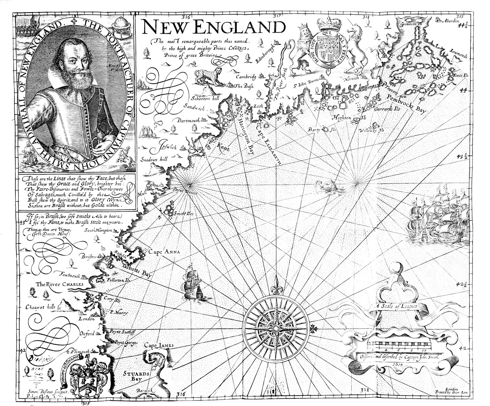
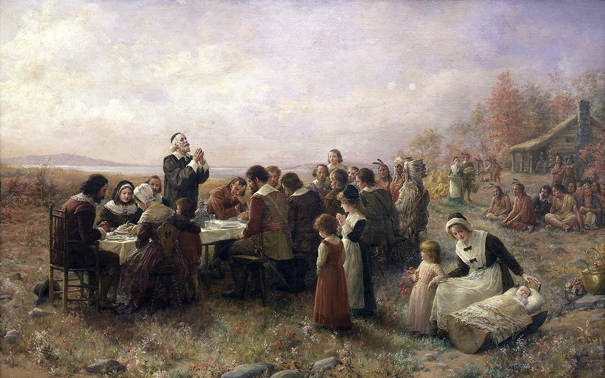

Thanksgiving History from Wampanoag Perspectives
Wampanoag people had their own communities, diplomacy, and traditions of giving thanks long before English settlers arrived. The 1621 harvest gathering at Patuxet, now Plymouth, is one moment in that longer history. Wampanoag historians and community members help us see what the familiar holiday story leaves out.
Patuxet before the Mayflower
Patuxet was a Wampanoag village. Long before the English founded Plymouth there in 1620, Wampanoag people had seasonal harvest gatherings and daily practices of giving thanks. They also had decades of experience with European traders and explorers. In 1614 Thomas Hunt kidnapped Tisquantum and other Wampanoag men. When Tisquantum returned in 1619, he found that an epidemic had killed most of his home community. [1] [3]
The engraved map below was published in 1616, before the Mayflower arrived. It labels the coast using English names, including “Plimouth.” Read the map alongside the Wampanoag history of Patuxet and ask whose names the map records. [3]

The 1621 gathering and the alliance behind it
In spring 1621, Wampanoag sachem Ousamequin, called Massasoit in many English accounts, and Plymouth governor John Carver agreed to mutual protection. Diplomacy gave Ousamequin a way to respond to an unfamiliar settlement in Wampanoag country. The written terms survive in English, and the museum notes that how they were translated remains uncertain. [4] [3]
In the fall, Edward Winslow described Ousamequin arriving with about ninety men. He recorded three days of gathering and that Wampanoag men brought five deer. His brief account gives no detailed menu or guest list. Wampanoag historian Paula Peters points out how English-written records often leave Wampanoag women out of view. The surviving account tells us far less about Native participants’ experiences than many later retellings suggest. [5] [2]
How the gathering became a national story
Relations deteriorated as English settlements expanded and conflicts grew over land and colonial law. Ousamequin’s son Metacom later built alliances to defend Native homelands, and war began in 1675. Centuries later, during the Civil War, President Abraham Lincoln proclaimed a national Thanksgiving in 1863. Congress established the fourth Thursday of November as the federal holiday in 1941. [3] [1] [6]
In her 1914 painting, Jennie Augusta Brownscombe puts a settler leading a prayer at the center and places several figures meant to represent Wampanoag participants along the edges of the scene. Compare that arrangement with Winslow’s account of Ousamequin, his large party, and their contribution of deer. The painting shows how a twentieth-century artist imagined the event almost three centuries later. [5] [1]

National Day of Mourning
In 1970, anniversary organizers invited Wamsutta (Frank James), an Aquinnah Wampanoag man, to speak. He wrote about dispossession and Wampanoag survival. When organizers offered him a replacement speech, he declined to read it. That year Native people and supporters gathered at Cole’s Hill in Plymouth for the first National Day of Mourning. Read his speech and the Mashpee Wampanoag Tribe’s account together. [7] [8]
Indigenous people hold different views about the holiday. Some gather with family or give thanks, some observe the National Day of Mourning, and some do both. The Mashpee Wampanoag Tribe’s own cultural resources offer a starting point for learning about the community today. [1] [9]
Questions for readers
- What does Winslow record about the Wampanoag contribution to the gathering? What questions does his account leave unanswered?
- Whose names are visible on the 1616 map? How does that choice shape the story the map tells?
- Compare Brownscombe’s painting and Wamsutta’s speech. What does each work ask its audience to remember?
Sources and further reading
- Rethinking Thanksgiving Celebrations: Native Perspectives on Thanksgiving · National Museum of the American Indian. Start here for Wampanoag traditions of giving thanks and the origins of the national story.
- Wampanoag Perspectives · Linda Coombs and Paula Peters, National Museum of the American Indian. Wampanoag speakers describe what English-written records and classroom retellings leave out.
- Wampanoag and English Relations Timeline · National Museum of the American Indian. Follow earlier contact, the settlement of Patuxet, and the struggle to protect Wampanoag lands.
- Treaty and Harvest Celebration · National Museum of the American Indian. Compare the English record of the agreement with the museum’s reading of its terms and limitations.
- Primary Sources for “The First Thanksgiving” at Plymouth · Edward Winslow and William Bradford, transcribed by Pilgrim Hall Museum. Read Winslow’s short firsthand account alongside Bradford’s description of the harvest season.
- Congress Establishes Thanksgiving · U.S. National Archives. Documents how and when the federal holiday date was established.
- Wamsutta (Frank James)’s 1970 Suppressed Speech · Wamsutta (Frank James), published by United American Indians of New England. Read James’s own words and UAINE’s account of why he did not give the speech at the anniversary dinner.
- National Day of Mourning · Mashpee Wampanoag Tribe. A Wampanoag tribal account of how the observance began and what the gathering means.
- Culture · Mashpee Wampanoag Tribe. The Tribe’s own introduction to its cultural traditions and community life.